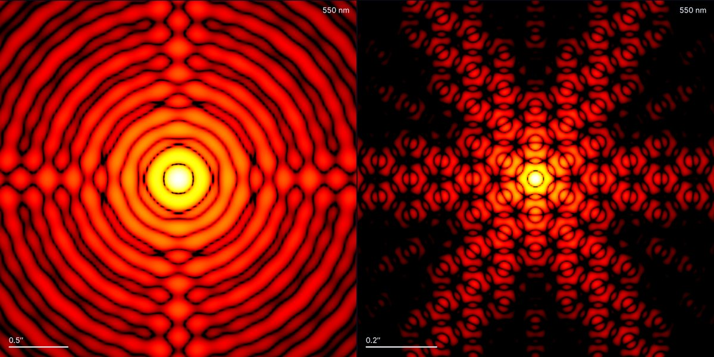
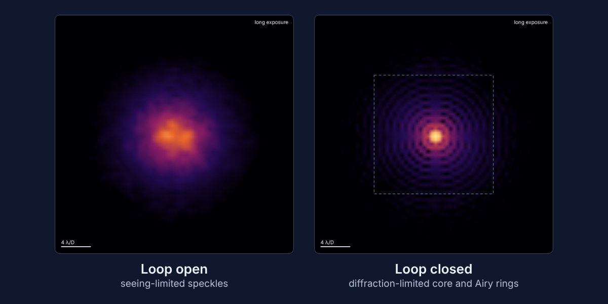
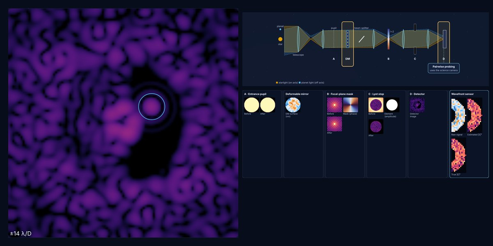

How telescopes and their optics shape what we measure: diffraction, aberrations, atmospheric correction and coronagraphy.

Telescope optics
Level: intermediate
How the shape of a telescope determines the image of a star: mirror size, central obstruction, spider vanes, hexagonal segments, aberrations and wavelength. Watch the Airy rings, the diffraction spikes and the Strehl ratio change.
Open the simulation →

Adaptive optics
Level: advanced
How a deformable mirror cancels atmospheric turbulence in real time, and what limits the correction: actuators, loop speed, wind and guide-star brightness.
Open the simulation →

High-contrast imaging
Level: introductory to advanced
Follow starlight through a coronagraph, plane by plane. Compare nine coronagraphs, seven wavefront sensors and three control laws, close the loop and dig a dark hole to reveal a planet. A guided tour for beginners; every parameter, curve and equation for experts.
Open the simulation →